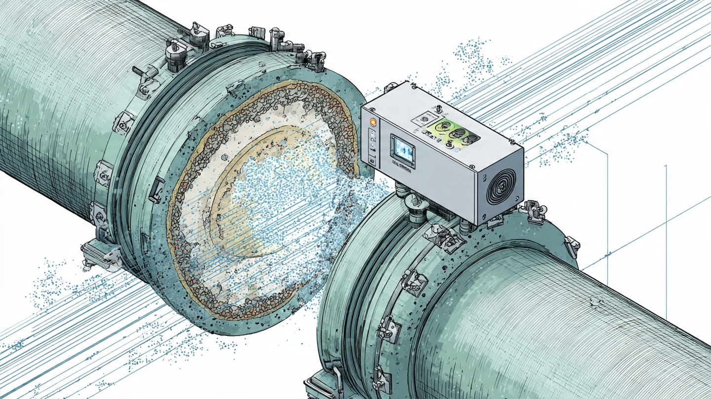

System and Method for Non-Invasive Estimation of Internal Pipe Deposit Thickness and Composition Using Passive Acoustic Transfer Function Analysis of Flow-Induced Noise with External Contact Microphones and Edge-Deployed Neural Network Classification

Abstract
Disclosed is a system and method for continuously estimating the thickness, spatial distribution, and mineralogical composition of internal deposits in pressurized water distribution pipes without interrupting service, cutting into the pipe, or employing active ultrasonic transducers. The system exploits the broadband acoustic energy already present inside operating pipes from turbulent flow, valve operations, and pump cycling as a passive illumination source. Arrays of piezoelectric contact microphones (accelerometers) clamped to the pipe exterior at spacings of 0.5–2 meters measure the vibration field induced by this internal acoustic excitation. A frequency-domain transfer function computed between sensor pairs encodes the pipe wall's vibroacoustic response, which shifts measurably as internal deposits alter the effective wall thickness, mass loading, and damping characteristics. Calcium carbonate scale (acoustic impedance ~6.3 × 10⁶ kg/m²s) produces distinct spectral signatures from iron oxide tubercles (~25 × 10⁶ kg/m²s), manganese dioxide deposits (~7.8 × 10⁶ kg/m²s), and biofilm (~1.5 × 10⁶ kg/m²s) because their differing densities and elastic moduli create characteristic frequency-dependent attenuation and dispersion patterns in the wall-guided modes. An edge-deployed convolutional neural network (210,000 parameters, 430 KB quantized INT8) processes 10-second transfer function snapshots and outputs deposit thickness estimates (0–15 mm range, target ±0.5 mm resolution), composition probability vectors across four deposit classes, and a composite fouling severity index. The system operates on a LoRaWAN-connected sensor node consuming under 120 mW, enabling battery-powered deployment at a target bill-of-materials cost of $18–32 per monitoring point across municipal water distribution networks where the American Water Works Association estimates $1 trillion in infrastructure investment is needed over the next 25 years.
Field of the Invention
This invention relates to non-destructive evaluation of water distribution infrastructure, specifically to passive acoustic methods for characterizing internal pipe deposits using flow-induced noise analysis and machine learning classification without active acoustic sources or service interruption.
Background
Internal deposits in water distribution pipes reduce hydraulic capacity, degrade water quality, harbor pathogenic biofilms, and accelerate corrosion. The EPA's 7th Drinking Water Infrastructure Needs Survey (2023) identified $625 billion in water infrastructure investment needs over the next 20 years, with transmission and distribution pipe replacement comprising the largest category. Scale deposits in distribution mains increase pumping energy costs by 12–32% per decade of accumulation (Ramos et al., Energy 2018) as the effective pipe diameter decreases and friction factors increase. A 150 mm cast iron main with 8 mm of internal tuberculation loses approximately 40% of its original hydraulic capacity.
Current methods for assessing internal pipe deposits suffer from fundamental limitations:
- Coupon sampling and pipe cutouts: The gold standard. A section of pipe is physically removed and examined. Provides precise deposit characterization but requires service shutdown, excavation (typically $3,000–$8,000 per excavation in urban settings), and destroys the sample location. Frequency: typically once per 5–10 years on critical mains, never on smaller distribution lines.
- Active ultrasonic thickness measurement: Clamp-on ultrasonic transducers transmit pulses through the pipe wall and measure echoes from internal surfaces. Established technology for wall thickness (Olympus 38DL PLUS, $8,000–$15,000 per instrument). Requires trained operators, couplant gel, surface preparation, and provides point measurements only. Cannot reliably distinguish deposit composition. Active source generates interference in multi-path pipe geometries.
- Guided wave ultrasonic testing (GWUT): Miao et al. (2023) demonstrated guided wave sensitivity to fouling deposits, measuring 0.5 dB/m attenuation per millimeter of calcite buildup. Requires expensive active pulsing hardware ($15,000–$50,000 per system), trained operators, and intermittent inspection visits. Not practical for continuous monitoring of distribution networks.
- Acoustic reflectometry: WO2016195645A1 describes deposit detection using controlled acoustic sources with distributed acoustic sensors. Requires an active acoustic source, and targets oil and gas subsea pipelines rather than municipal water distribution. WO/2025/221752 similarly uses active hydrophone measurements for subsea deposition detection.
- In-pipe inspection (smart pigs): Instrumented devices travel through the pipe recording sensor data. Limited to pipes ≥ 150 mm diameter with accessible insertion/retrieval points. Cost: $50,000–$200,000 per inspection campaign. Service interruption required. Impractical for the estimated 2.2 million miles of US distribution pipe (ASCE 2021).
- Hydraulic modeling: C-factor tests and head loss measurements infer average roughness but cannot resolve deposit thickness, composition, or spatial distribution along individual pipe segments.
Meanwhile, every operating pressurized water pipe already contains a rich broadband acoustic source. Turbulent flow at Reynolds numbers typical of distribution mains (Re 10,000–200,000) generates continuous broadband acoustic energy from 10 Hz to 10 kHz that propagates through the pipe wall as guided waves. Valve operations, pump transients, and pressure regulator oscillations contribute additional acoustic energy at characteristic frequencies. Evans et al. (Flow Measurement and Instrumentation, 2004) demonstrated that passive acoustic signatures from particulate slurry flows correlate with concentration and flow rate. Thompson et al. (Journal of Sound and Vibration, 2010) characterized the spectral properties of flow-induced pipe wall vibrations across a range of pipe materials and flow conditions.
The gap in the art is a complete system that: (a) uses passive flow noise rather than active acoustic sources for deposit characterization, eliminating the cost and complexity of pulsing hardware; (b) extracts deposit thickness and composition from the frequency-domain transfer function between externally-mounted sensors; (c) deploys edge ML for real-time, continuous classification at each monitoring point; and (d) scales to network-wide deployment at costs compatible with municipal water utility budgets.
Detailed Description
1. Passive Acoustic Source Characterization
Water flowing through distribution pipes at typical velocities of 0.3–3.0 m/s generates turbulent boundary layer noise with a broadband spectral density described by the Corcos model (1963). The power spectral density (PSD) of wall pressure fluctuations follows p²(f) ∝ ρ²u⁴τ / (f × δ*) where ρ is fluid density, uτ is friction velocity, and δ* is boundary layer displacement thickness. For a 200 mm ductile iron pipe carrying water at 1.5 m/s, this produces usable acoustic energy from approximately 20 Hz to 8 kHz, with peak energy density between 50 and 500 Hz.
Additional passive acoustic sources present in operating distribution networks include: pressure-reducing valve (PRV) cavitation noise (broadband, 200 Hz–20 kHz, amplitude proportional to pressure differential); pump cycling transients (impulsive, 0.1–10 Hz repetition rate, broadband spectral content to 5 kHz); water hammer events from sudden valve closures (impulsive, dominant energy below 200 Hz); and consumer demand fluctuations causing flow velocity variations that modulate the turbulent noise floor. The system does not require any of these sources individually but exploits whatever acoustic energy is present during each measurement window.
2. Sensor Node Hardware
Each sensor node comprises: two or three piezoelectric accelerometers (e.g., PCB Piezotronics 352C33, sensitivity 100 mV/g, frequency range 0.5 Hz–10 kHz; or lower-cost MEMS alternatives such as Analog Devices ADXL1002 at $8–12/unit) mounted circumferentially at 120° spacing on the pipe exterior using magnetic saddle clamps for ferrous pipes or epoxy-bonded saddles for non-ferrous materials; a 24-bit ADC (e.g., Texas Instruments ADS1263, 38.4 kSPS per channel, $12/unit) sampling all channels synchronously; a low-power microcontroller with DSP capability (e.g., STM32U5 series, Arm Cortex-M33 with FPU, 160 MHz, $6/unit) running the edge inference model; a LoRaWAN radio module (Semtech SX1262, $4/unit) for network communication; temperature and humidity sensors for environmental compensation; and a battery pack (18650 Li-ion, 3,400 mAh × 2) with optional solar charging for above-ground installations. Target bill-of-materials: $18–32 per node depending on accelerometer selection. Installation requires no pipe penetration, no couplant gel, and no service interruption.
3. Transfer Function Estimation
The core measurement is the frequency-domain transfer function H(f) between accelerometer pairs mounted on the pipe exterior. For a two-sensor configuration with sensors A and B separated by distance d along the pipe axis:
H_AB(f) = S_AB(f) / S_AA(f)
where S_AB(f) is the cross-spectral density between sensors A and B, and S_AA(f) is the auto-spectral density at sensor A. This transfer function encodes the propagation characteristics of guided waves traveling through the pipe wall between the two measurement points, including attenuation, dispersion, and mode conversion effects that are sensitive to the pipe wall's mechanical state.
Internal deposits modify H(f) through three physical mechanisms: (1) mass loading increases the effective wall thickness, shifting circumferential resonance frequencies downward by Δf/f₀ ≈ −m_deposit / (2 × m_wall), where m represents mass per unit area; (2) damping augmentation from the viscoelastic deposit layer increases the imaginary component of H(f), with biofilm (loss factor η ≈ 0.1–0.3) producing substantially more damping than crystalline CaCO₃ (η ≈ 0.001–0.005) or iron oxide (η ≈ 0.01–0.03); and (3) acoustic impedance mismatch at the wall-deposit and deposit-fluid interfaces creates frequency-dependent reflection coefficients that alter the modal structure of H(f). The reflection coefficient at a steel-CaCO₃ interface is R = (Z_CaCO₃ − Z_steel) / (Z_CaCO₃ + Z_steel) ≈ −0.76, while at a steel-biofilm interface R ≈ −0.94, producing measurably different transfer function signatures.
The system computes H(f) using Welch's method with 50%-overlapping Hanning windows of 1,024 samples (at 10 kHz sampling rate), averaged over 10-second measurement intervals containing approximately 195 segments. This averaging suppresses uncorrelated noise while preserving the deterministic transfer function, achieving a coherence γ²(f) > 0.8 across the 50–5,000 Hz band under typical flow conditions (velocity > 0.5 m/s).
4. Deposit-Sensitive Feature Extraction
The raw transfer function H(f) is transformed into a feature representation suitable for neural network classification. The feature extraction pipeline comprises:
- Magnitude and phase decomposition: |H(f)| and ∠H(f) are computed in 256 frequency bins spanning 20–5,000 Hz (logarithmic spacing), yielding a 512-element raw feature vector.
- Coherence weighting: Each frequency bin is weighted by the measured coherence γ²(f), down-weighting bands where the passive source provides insufficient excitation (typically below 30 Hz and in narrow bands where resonances of adjacent structures inject uncorrelated energy).
- Temperature compensation: The pipe wall temperature (measured by contact RTD on the sensor saddle) modifies wave propagation speed by approximately 0.04% per °C for steel. A linear temperature correction is applied to the frequency axis of H(f) before feature extraction.
- Baseline normalization: The initial transfer function measured at deployment (clean pipe condition, or earliest available measurement) serves as a baseline. The feature vector presented to the classifier is the residual ΔH(f) = H_current(f) − H_baseline(f), which isolates changes attributable to deposit accumulation from static pipe geometry effects.
- Circumferential mode decomposition: When three circumferentially-spaced accelerometers are present, spatial Fourier decomposition separates the n = 0 (breathing), n = 1 (beam), and n = 2 (ovaling) circumferential modes. Deposits affect these modes differently: uniform annular deposits primarily shift n = 0 frequencies, while asymmetric deposits (common in gravity-fed mains where sediment settles to the invert) create mode coupling between n = 0 and n = 1.
5. Edge-Deployed Neural Network Architecture
The classifier is a 1D convolutional neural network operating on the 512-element feature vector (or 768-element vector when circumferential modes are available):
- Input layer: 512 or 768 features (magnitude + phase, coherence-weighted, temperature-compensated, baseline-normalized).
- Conv1D block 1: 32 filters, kernel size 7, stride 2, ReLU activation, batch normalization. Captures broad spectral features corresponding to overall mass loading.
- Conv1D block 2: 64 filters, kernel size 5, stride 2, ReLU, batch normalization. Captures intermediate-scale features corresponding to resonance shifts.
- Conv1D block 3: 64 filters, kernel size 3, stride 1, ReLU, batch normalization. Captures fine spectral features corresponding to damping and impedance mismatch signatures.
- Global average pooling reduces spatial dimension to a 64-element vector.
- Dense layer: 64 → 32 neurons, ReLU.
- Output heads (multi-task): (a) Thickness regression head: 32 → 1, sigmoid activation scaled to 0–15 mm range; (b) Composition classification head: 32 → 4, softmax over {CaCO₃, Fe₂O₃/FeOOH, MnO₂, biofilm}; (c) Severity index head: 32 → 1, sigmoid scaled to 0–100.
Total parameter count: approximately 210,000. Quantized to INT8 using TensorFlow Lite for Microcontrollers: 430 KB model size. Inference time on STM32U5 at 160 MHz: approximately 15 ms per 10-second measurement window.
6. Training Data Generation
Supervised training data is generated through three complementary approaches:
- Finite element simulation: COMSOL Multiphysics models of pipe segments (ductile iron, PVC, HDPE, copper; diameters 50–600 mm; deposit types and thicknesses 0–15 mm) driven by stochastic broadband excitation matching measured turbulent flow spectra. Simulated transfer functions are computed between virtual sensor pairs. This generates approximately 50,000 labeled examples covering the full parameter space.
- Laboratory pipe loop: A recirculating pipe loop with controlled deposit accumulation (accelerated scaling using supersaturated CaCO₃ solution, iron oxide deposition using ferric chloride injection, biofilm cultivation using nutrient-supplemented water). Transfer functions are recorded daily as deposits accumulate, with periodic coupon sampling for ground-truth thickness and composition measurement. Target: 5,000 experimentally validated examples.
- Field calibration: When utilities perform scheduled pipe replacement or rehabilitation (approximately 1% of US distribution pipe per year, per AWWA estimates), sensor nodes installed on pipe sections prior to removal provide transfer function measurements that are paired with destructive analysis of the removed pipe. This ongoing field data collection refines the model through transfer learning. Target: 200–500 field-calibrated examples per year per participating utility.
7. Network-Scale Deployment Architecture
Sensor nodes communicate via LoRaWAN (868/915 MHz ISM band) to gateway stations co-located with utility SCADA infrastructure. Each node transmits a compressed 128-byte payload every 15 minutes containing: deposit thickness estimate (float16), composition probability vector (4 × uint8), severity index (uint8), measurement quality metrics (coherence, SNR; 4 bytes), temperature (int16), and node diagnostics (battery voltage, uptime; 4 bytes). At 128 bytes per transmission and 96 transmissions per day, the daily data volume per node is approximately 12 KB, well within LoRaWAN duty cycle limits.
A cloud-hosted aggregation platform (or on-premise for utilities with data sovereignty requirements) ingests node telemetry and provides: spatial visualization of deposit conditions across the distribution network overlaid on GIS pipe maps; trend analysis showing deposit accumulation rates per pipe segment; predictive models estimating time-to-intervention thresholds based on accumulation trajectories; integration with hydraulic models to estimate the hydraulic capacity impact of observed deposits; and automated work order generation when severity indices exceed utility-defined thresholds.
8. Composition-Specific Detection Physics
The four target deposit classes produce distinct acoustic signatures owing to their markedly different material properties:
- Calcium carbonate (CaCO₃): Density 2,710 kg/m³, longitudinal wave speed 6,530 m/s, acoustic impedance 17.7 × 10⁶ kg/m²s (calcite). Hard crystalline deposits that increase effective wall stiffness. Signature: upward shift in high-order circumferential mode frequencies, minimal damping increase, sharp impedance mismatch features in H(f) at the deposit-water interface.
- Iron oxide/hydroxide (Fe₂O₃, FeOOH): Density 3,900–5,200 kg/m³, longitudinal wave speed 4,800–6,200 m/s, acoustic impedance 25 × 10⁶ kg/m²s (hematite). Dense, moderately hard tubercular deposits. Signature: pronounced downward shift in n = 0 breathing mode frequency due to high mass loading, moderate damping increase from porous tubercle structure, heterogeneous spatial distribution visible in circumferential mode coupling.
- Manganese dioxide (MnO₂): Density 5,030 kg/m³, longitudinal wave speed 4,100 m/s, acoustic impedance 20.6 × 10⁶ kg/m²s. Often co-precipitates with iron. Signature: similar to iron oxide but with higher mass loading per unit thickness and characteristic damping profile reflecting its layered crystalline structure (birnessite dominant form in water mains).
- Biofilm: Density 1,000–1,050 kg/m³, longitudinal wave speed approximately 1,500 m/s (similar to water), acoustic impedance approximately 1.5 × 10⁶ kg/m²s. Soft, viscoelastic, water-saturated. Signature: dramatic damping increase (loss factor 0.1–0.3 vs. 0.001–0.005 for mineral deposits) with minimal frequency shift, producing a broadband reduction in transfer function coherence that is the most distinctive single feature for biofilm detection.
9. Operational Considerations
- Minimum flow velocity: The system requires a minimum flow velocity of approximately 0.3 m/s to generate sufficient turbulent acoustic energy for transfer function estimation with acceptable coherence (γ² > 0.7). Distribution mains in active service exceed this threshold during peak demand periods. Nodes in low-flow segments schedule measurements during high-demand windows (6–9 AM, 5–8 PM) when flow velocities are highest.
- Pipe material adaptation: Ductile iron, cast iron, steel, copper, PVC, and HDPE pipes have different baseline vibroacoustic properties. The baseline normalization step (Section 4.4) absorbs static material differences. Material-specific fine-tuning layers in the neural network improve accuracy: a shared feature backbone with material-specific classification heads, selected by a pipe material tag configured at installation.
- External noise rejection: Traffic vibrations, adjacent pipe coupling, and construction activity inject external energy into the measurement. The coherence-weighting step suppresses frequencies where the measured signal is dominated by uncorrelated external sources. Additionally, the spatial filtering provided by computing transfer functions between pipe-mounted sensors inherently rejects far-field sources whose wavefronts arrive at both sensors simultaneously (zero differential phase), while pipe-guided waves from internal sources maintain the characteristic dispersion-dependent phase relationship.
- Seasonal temperature variation: Water temperature in distribution mains varies from 2°C to 28°C seasonally, affecting both the acoustic properties of the pipe wall and the flow noise spectrum. The temperature compensation described in Section 4.3 corrects for wave speed changes. Long-term trend analysis uses temperature-deseasonalized deposit thickness estimates.
10. Figures Description
- Figure 1: System architecture showing sensor node mounted on exterior of distribution main, with annotated cross-section illustrating flow-induced acoustic excitation propagating through pipe wall to contact microphones, and edge computing module processing transfer function to generate deposit profile.
- Figure 2: Simulated transfer function magnitude |H(f)| for a 200 mm ductile iron pipe under four deposit conditions: clean (baseline), 3 mm CaCO₃, 3 mm Fe₂O₃, and 2 mm biofilm. Frequency range 50–5,000 Hz. Annotations highlight composition-specific spectral signatures: resonance shifts, damping envelopes, and impedance mismatch features.
- Figure 3: Network-scale deployment schematic showing sensor nodes on distribution mains communicating via LoRaWAN to a gateway station, with cloud aggregation platform generating GIS-overlaid deposit condition maps.
- Figure 4: Neural network architecture diagram showing input feature vector, three Conv1D blocks, global average pooling, and multi-task output heads for thickness, composition, and severity.
Claims
- A system for non-invasive estimation of internal deposit conditions in pressurized water distribution pipes, comprising: one or more piezoelectric contact sensors mounted on the pipe exterior; an analog-to-digital converter sampling said sensors; and a processor computing a frequency-domain transfer function from the ambient acoustic energy generated by fluid flow within the pipe, without the use of any active acoustic source; wherein said transfer function is analyzed by a machine learning model to estimate at least one of deposit thickness, deposit composition, or a fouling severity index.
- The system of claim 1, wherein the transfer function H(f) is computed as the cross-spectral density between two or more sensors divided by the auto-spectral density at a reference sensor, using Welch's averaged periodogram method over measurement windows of 5–60 seconds.
- The system of claim 1, wherein the machine learning model is a convolutional neural network deployed on an edge microcontroller co-located with the sensors, performing inference without cloud connectivity.
- The system of claim 1, wherein the composition classification distinguishes among calcium carbonate, iron oxide/hydroxide, manganese dioxide, and biofilm deposits based on their distinct acoustic impedance, damping, and mass loading characteristics as encoded in the transfer function.
- The system of claim 1, further comprising a baseline normalization module that subtracts an initial transfer function measured at deployment from subsequent measurements, isolating deposit-induced changes from static pipe geometry effects.
- The system of claim 1, wherein three or more sensors are arranged circumferentially around the pipe at angular spacings enabling spatial Fourier decomposition of circumferential vibration modes, and wherein asymmetric deposit distributions are detected from coupling between the n = 0 breathing mode and the n = 1 beam bending mode.
- The system of claim 1, further comprising a temperature sensor measuring pipe wall temperature and a compensation module that adjusts the frequency axis of the transfer function to account for temperature-dependent changes in guided wave propagation velocity.
- A method for characterizing internal pipe deposits comprising: mounting contact sensors on a pipe exterior without penetrating the pipe wall; recording vibration signals induced by ambient fluid flow acoustic energy within the pipe; computing a frequency-domain transfer function between sensor locations; extracting deposit-sensitive features including resonance frequency shifts, damping ratios, and coherence patterns; and classifying said features using a trained neural network to estimate deposit thickness and composition.
- The method of claim 8, further comprising aggregating deposit estimates from a plurality of sensor nodes across a water distribution network and generating spatial maps of deposit conditions overlaid on pipe network geographic information system data.
- The method of claim 8, wherein the neural network is trained using a combination of finite element simulated transfer functions, laboratory pipe loop measurements with controlled deposit accumulation, and field calibration data from pipes removed during scheduled infrastructure replacement.
- The system of claim 1, wherein the sensor node communicates deposit estimates via LoRaWAN to a network gateway, transmitting compressed payloads at intervals of 1–60 minutes, and wherein a cloud or on-premise platform aggregates estimates across the distribution network to generate predictive maintenance schedules.
Implementation Notes
A minimum viable deployment begins with 20–50 sensor nodes installed on distribution mains of known pipe material and diameter, paired with hydraulic model data for the same segments. Initial baseline transfer functions are recorded over a 7-day commissioning period to characterize clean-pipe response and ambient noise conditions. The neural network ships pre-trained on simulated data and is fine-tuned with each utility's field calibration data as scheduled pipe replacements provide ground truth. Utilities participating in the EPA WIFIA program or receiving funding under the Drinking Water State Revolving Fund have established infrastructure assessment mandates that align with this monitoring approach. At a target cost of $18–32 per node plus $200–500 for installation labor, monitoring 1,000 critical pipe segments costs $220,000–$530,000, compared to $3–8 million for equivalent coverage using conventional coupon sampling or in-pipe inspection.
Prior Art References
- AWWA Infrastructure Financing — $1 trillion US water infrastructure investment needed over 25 years
- EPA 7th Drinking Water Infrastructure Needs Survey (2023) — $625 billion investment needs
- ASCE 2021 Report Card — 2.2 million miles of US distribution pipe
- Ramos et al., Energy 2018 — Pumping energy increase of 12–32% per decade from scale accumulation
- Corcos, Journal of Fluid Mechanics 1963 — Turbulent boundary layer wall pressure fluctuation model
- Evans et al., Flow Measurement and Instrumentation 2004 — Passive acoustic monitoring of pipeline particulate slurry flows
- Thompson et al., Journal of Sound and Vibration 2010 — Flow-induced pipe wall vibration spectral characterization
- Miao et al., Journal of Physics: Conference Series 2023 — Guided wave sensitivity to fouling deposits (0.5 dB/m per mm calcite)
- WO2016195645A1 — Controlled acoustic source with distributed sensors for conduit impedance anomalies (active method)
- WO/2025/221752 — Subsea pipe deposition detection using acoustic measurements (active hydrophone method)
- Wiesław et al., Materials 2026 — FTIR/ICP-OES characterization of drinking water pipe scale deposits
- Olympus 38DL PLUS — Conventional active ultrasonic pipe thickness measurement
- TensorFlow Lite for Microcontrollers — Edge ML inference runtime
- EPA WIFIA Program — Water infrastructure financing
- Drinking Water State Revolving Fund — Federal infrastructure assessment mandates